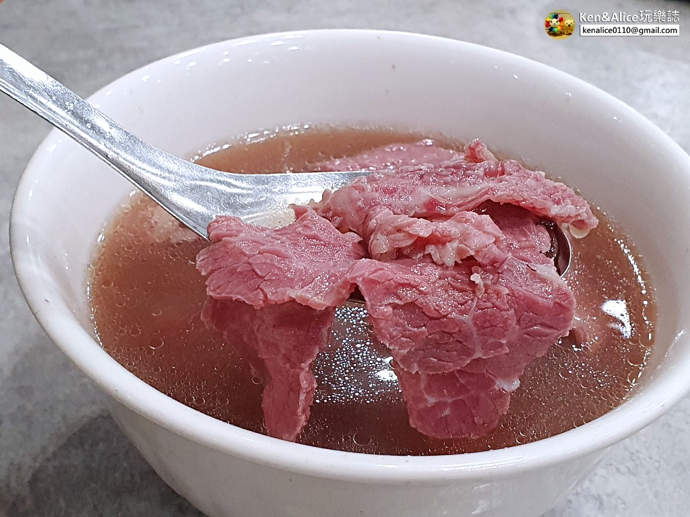
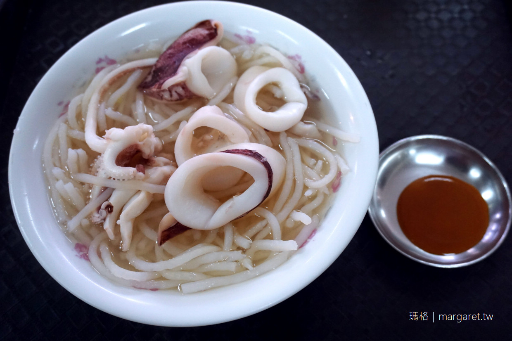

僅次於牛肉湯的「鱔魚意麵」也是另一個經典的台南小吃 而台南鱔魚麵裡最令人津津樂道的，就是位在民族路三段的「阿江鱔魚意麵」了。 小小舊舊的店面，三十年來人潮總是絡繹不絕，精選的鱔魚肉質和剛好的火候， 就是鱔魚意麵好吃的關鍵，經過大火快炒的意麵不會乾膩，而是有彈性且非常入味， 不管是乾炒的清脆彈牙，或是勾芡的鮮甜爽口，鹹、甜、酸、辣在嘴裡同時迸發， 讓人越吃越上癮，來到台南千萬別忘記來嘗嘗！

天未亮就已經大排長龍的牛肉湯，是台南的熱門美食代表。 台南知名的牛肉湯有好幾家，而位於安平老街附近的「文章牛肉湯」更是榜上有名。 曾是船長的老闆，在中年開始創業，選擇鑽研自己最熱愛的討海人傳統早餐「清燙牛肉湯」， 選用當天新鮮配送的善化溫體牛肉，使用牛腩、大骨再加上多種中藥材熬煮高湯， 淋在粉紅漂亮牛肉片上，喝起來香醇甘甜、牛肉鮮嫩多汁！再沾上薑絲和醬油膏辣醬， 就是最道地的溫體牛肉吃法，而每碗湯都可以免費加湯一次、隨湯還會附贈牛肉燥飯， 超級阿莎力的！

提到國華街最有人氣的美食，絕對是「邱家小卷米粉」，新鮮Q彈的小卷搭配上清甜的湯頭， 是在地人與外地觀光客都愛的好滋味！ 店內寬敞卻時刻座無虛席，好在翻桌率高，等候時間不需太長就能享用新鮮好味道。 長得像米苔目的粗米粉，硬中帶點Q，配上給料豪不吝嗇的超彈牙小卷，新鮮且甘甜， 小卷湯可以同時嚐到整隻小卷與可遇不可求的小卷蛋，建議先吃原味再沾上辣醬或胡椒， 讓小卷的鮮甜更加提升。